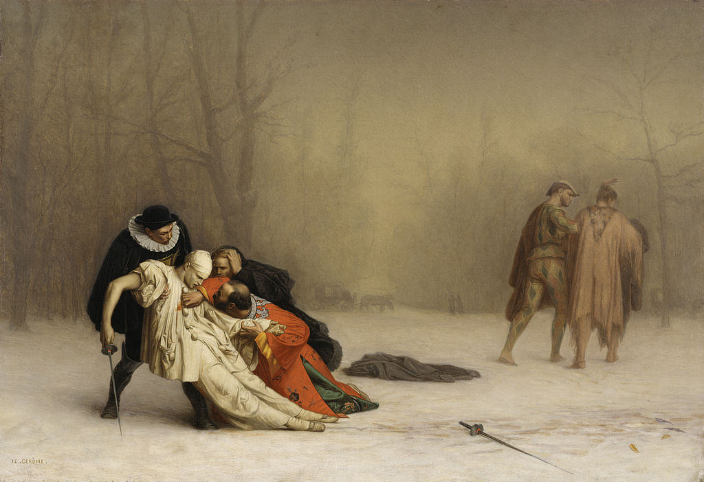

<head>
<meta charset="UTF-8" />
<meta name="keywords" content="drawing, painting" />
<meta name="description" content="drawings by Sunjy" />
<title>Sunjy</title>
<link rel="shortcut icon" type="image/x-icon" href="../../mImages/mCommon/favicon.ico" media="screen" />
<link rel="stylesheet" type="text/css" href="../../mCsses/mCommon/mCssA.css" />
<link rel="stylesheet" type="text/css" href="../../mCsses/mCommon/mCssB.css" />
<link rel="stylesheet" type="text/css" href="../../mCsses/mCommon/mCssC.css" />
<link rel="stylesheet" type="text/css" href="../../mCsses/mCommon/mCssD.css" />
<link rel="stylesheet" type="text/css" href="../../mCsses/mContent/mCssA.css" />
<link rel="stylesheet" type="text/css" href="../../mCsses/mContent/mCssB.css" />
<link rel="stylesheet" type="text/css" href="../../mCsses/mContent/mCssC.css" />
<link rel="stylesheet" type="text/css" href="../../mCsses/mContent/mCssD.css" />
</head>
<script type="text/javascript" src="../../mScripts/mContent/mContentAA.js" /></script>
<script type="text/javascript" src="../../mScripts/mContent/mContentAB.js" /></script>
<script type="text/javascript" src="../../mScripts/mContent/mContentAC.js" /></script>
<script type="text/javascript" src="../../mScripts/mContent/mContentAD.js" /></script>
<script type="text/javascript"></script> 
<script type="text/javascript">
document.write('<div class="mImgAbsolute"></div>');
/*
document.write('<p class="mFontSizeBColor" />From a white paper...</p>');
document.write('<table class="center"><tr><td>');
document.write('');
document.write('</td></tr></table>');
*/
</script>


<script type="text/javascript">
document.write('<p class="mFontSizeBColor" />The Duel After the Masquerade</p>');
document.write('<p class="mFontSizeSColor" />By Jean-Leon Gerome, depicts a man dressed as a Pierrot who has been mortally wounded in a sword duel. He has collapsed into the arms of a friend.<br><br>A surgeon, dressed as a Doge of Venice, tries to stop the flow of blood, while the third person dressed as a priest clutches his head. The scene is set on a grey winter morning in forest, trees bare and snow covering the ground.<br><br>The survivor of the duel is dressed as an American Indian. He is walking away with his shoulders and head hunched down. He is supported by his second, who is dressed as Harlequin.<br><br>The wounded man is still holding his sword, in contrast to the victor who has dropped his sword, suggesting that the wounded duelist started the contest of honor.<br><br>The bizarreness of the scene with all the characters dressed in brightly colored costumes has turned into a tragedy.<br><br>A duel is an agreed engagement of combat between two people, with matched weapons, based on accepted Dueling Rules.<br><br>Duels were mainly practiced in early modern Europe with precedents in the medieval code of honor and continued into the early 20th century.<br><br>Duels were mostly fought with swords, but by the late 18th century in England, duels contests were more commonly fought using pistols.<br><br>The most notorious American duel was the Burr-Hamilton duel. Alexander Hamilton was fatally wounded by his political rival, the sitting Vice President of the United States, Aaron Burr. <br><br>Another American politician, Andrew Jackson, later to become the seventh president, fought at least two duels. <br><br>In 1842, future President Abraham Lincoln, who at the time was an Illinois state legislator, met to duel with state auditor James Shields. Fortunately, their seconds intervened and persuaded them against it.</p>');
document.write('<table class="center" /><tr><td>');
document.write('<br>A surgeon, dressed as a Doge of Venice, tries to stop the flow of blood, while the third person dressed as a priest clutches his head. The scene is set on a grey winter morning in forest, trees bare and snow covering the ground.<br><br>The survivor of the duel is dressed as an American Indian. He is walking away with his shoulders and head hunched down. He is supported by his second, who is dressed as Harlequin.<br><br>The wounded man is still holding his sword, in contrast to the victor who has dropped his sword, suggesting that the wounded duelist started the contest of honor.<br><br>The bizarreness of the scene with all the characters dressed in brightly colored costumes has turned into a tragedy.<br><br>A duel is an agreed engagement of combat between two people, with matched weapons, based on accepted Dueling Rules.<br><br>Duels were mainly practiced in early modern Europe with precedents in the medieval code of honor and continued into the early 20th century.<br><br>Duels were mostly fought with swords, but by the late 18th century in England, duels contests were more commonly fought using pistols.<br><br>The most notorious American duel was the Burr-Hamilton duel. Alexander Hamilton was fatally wounded by his political rival, the sitting Vice President of the United States, Aaron Burr. <br><br>Another American politician, Andrew Jackson, later to become the seventh president, fought at least two duels. <br><br>In 1842, future President Abraham Lincoln, who at the time was an Illinois state legislator, met to duel with state auditor James Shields. Fortunately, their seconds intervened and persuaded them against it." />');
document.write('</td></tr></table>');
</script>


